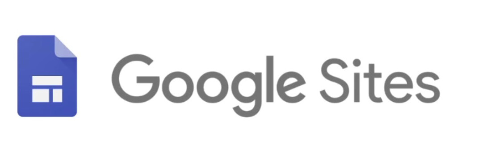

Google Sites es una aplicación online ofrecida por Google, permite crear un sitio web, una Intranet e incluso la creación de wikis de forma muy sencilla.
Con Google Sites los usuarios pueden reunir en un único lugar y de una forma rápida información variada, como pueden ser vídeos, calendarios, presentaciones, archivos, etc.
El objetivo de Google Sites es que cualquier persona pueda crear un sitio web que permita compartir información con un grupo reducido de personas, con toda su organización o con todo el mundo. Resulta muy útil en la creación de intranets, páginas de empleados, wikis, entre otras.
Las 4 ventajas de las que dispone Google Sites
- Fácil de utilizar
- Personalizable
- Mejora la comunicación interna
- Rentable para el presupuesto [1].
A continuación se muestra un videotutorial de la herramienta:
Videotutorial Google Sites